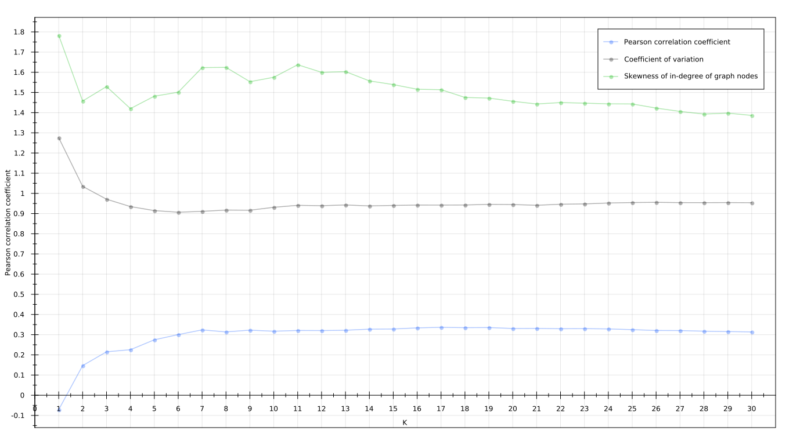

Assortativity of kNN graphs
Research problem definition
Whether there exists a correlation between k
parameter of kNN graphs (nodes' number of outgoing connections)
and its assortativity coefficient.
Where assortativity is a tendency of nodes to connect to similar nodes.
Why is research of assortativity important?
We can investigate whether real world datasets/networks tend to have
nodes more keen to connect to nodes alike them or rather connect to random nodes.
Examples of (dis)assortative networks:
- Social networks - assortative
- we connect with people that are alike us in terms of age, nationality, income, etc
- Internet - disassortative
- Internet nodes can connect to any other node
One of received results via implemented solution

Pearson Correlation Coefficient calculation
public double compute() {
int numLinks = g.getEdgeCount();
double[] degSrc = new double[numLinks];
double[] degDst = new double[numLinks];
Collection links = g.getEdges();
Iterator lit = links.iterator();
int i = 0;
while (lit.hasNext()) {
Link l = lit.next();
Pair endPoints = g.getEndpoints(l);
degSrc[i] = g.degree(endPoints.getFirst());
degDst[i] = g.degree(endPoints.getSecond());
i++;
}
PearsonsCorrelation pc = new PearsonsCorrelation();
return pc.correlation(degSrc, degDst);
}